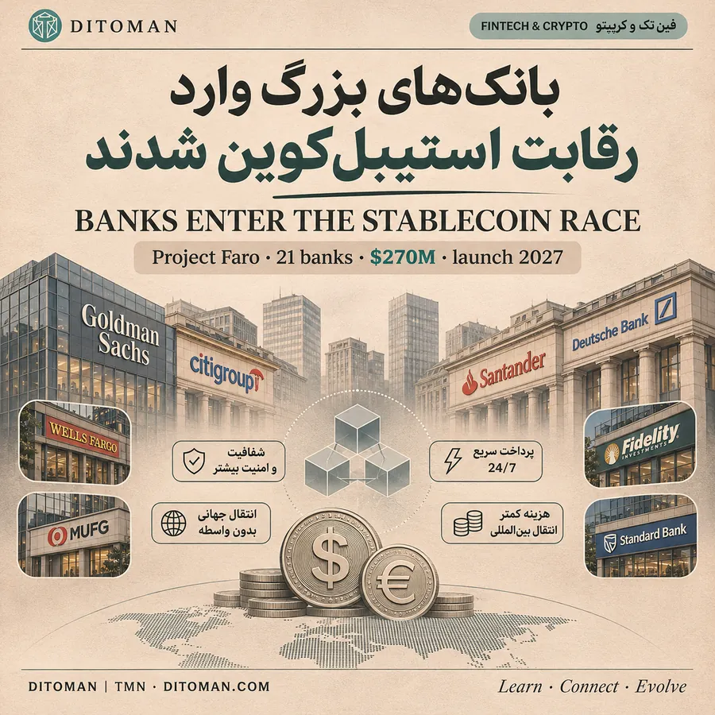
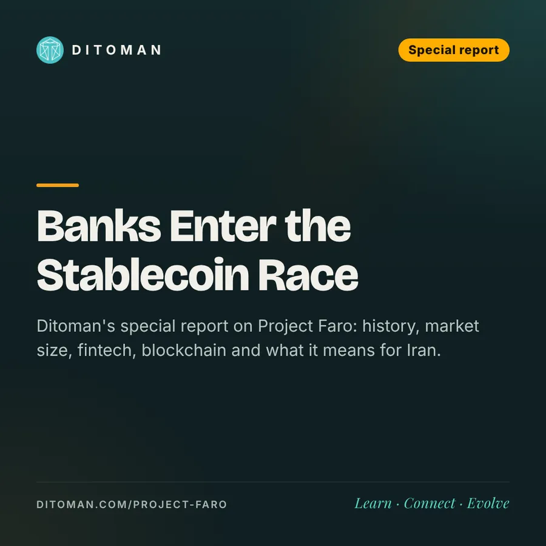

بانکهای بزرگ وارد رقابت استیبلکوین شدند؛ آیندهی پرداخت در حال تغییر است؟
Banks enter the stablecoin race: is the future of payments changing?
گزارش ویژهی دیتومان دربارهی Project Faro؛ از تاریخچه و اندازهی بازار تا نقش فینتک، بلاکچین و معنای این تحول برای ایران.
Ditoman's special report on Project Faro: history, market size, fintech, blockchain and what it means for Iran.
۰۰. یک صحنه از آیندهی نزدیک
ساعت ۲ بامداد شنبه است. یک شرکت در آلمان باید یک میلیون یورو برای تأمینکنندهاش در سنگاپور بفرستد.
امروز: باید تا دوشنبه صبر کند. پول از چند بانک واسطه عبور میکند، هر کدام کارمزد میگیرند و ممکن است چند روز طول بکشد.
فردا: مبلغ را در قالب یوروی دیجیتال میفرستد و طرف مقابل چند دقیقه بعد آن را دریافت میکند؛ پولی که همچنان زیر نظارت بانکهاست، اما روی ریل بلاکچین حرکت میکند.
این همان آیندهای است که بزرگترین بانکهای دنیا حالا رسماً برایش پول گذاشتهاند.
۰۱. دقیقاً چه اتفاقی افتاد؟
به گزارش بلومبرگ (۱۰ نوامبر ۲۰۲۶)، ۲۱ بانک و نهاد مالی بزرگ برای ساخت یک صادرکنندهی مشترک استیبلکوین دلاری در آمریکا حدود ۲۷۰ میلیون دلار تعهد کردهاند. اسم پروژه: Project Faro.
- سرمایه: حدود ۲۷۰ میلیون دلار، برای هزینههای عملیاتی ۵ سال اول؛ نه پشتوانهی توکنها
- میانگین بودجهی سالانه: حدود ۵۴ میلیون دلار (محاسبهی دیتومان)
- زمان عرضه: نیمهی اول ۲۰۲۷
- محصول: اول یک توکن دلاری؛ یورو و دیگر ارزهای G7 در اولویت بعدی
- بازار هدف: عمدهفروشی، نهادی و خردهفروشی؛ زیر قانون GENIUS آمریکا و در اروپا زیر قانون MiCA
اعضای اعلامشده:
| منطقه | اعضا |
|---|---|
| آمریکای شمالی | Bank of America، Capital One، Citi، Fidelity، Goldman Sachs، PNC، Scotiabank، TD، Wells Fargo، WisdomTree |
| اروپا | Santander، BBVA، Commerzbank، Crédit Agricole، Deutsche Bank، Lloyds، Rabobank، UBS |
| آسیا، خاورمیانه و آفریقا | MUFG (ژاپن)، Sirius International Holding، Standard Bank (آفریقای جنوبی) |
هنوز اعلام نشده:
سهم هر عضو، اسم توکن، بلاکچین انتخابی، نحوهی نگهداری ذخایر، مجوز نهایی و مدیرعامل. خود کنسرسیوم هم رقم ۲۷۰ میلیون را رسماً تأیید نکرده؛ این رقم از منابع بلومبرگ است.
۰۲. چرا این خبر یک نقطهی عطف است؟
بانکها دهههاست زیرساخت پرداخت جهانی را اداره میکنند: SWIFT پیامهای بانکی را جابهجا میکند، بانکهای کارگزار حسابها را به هم وصل میکنند و تسویهی نهایی از مسیر بانکی انجام میشود.
این سیستم امن و قانونمند است، اما در پرداخت بینالمللی چند مشکل قدیمی دارد:
- اختلاف ساعت و تعطیلیها: پول آخر هفته و شبها حرکت نمیکند
- واسطههای زیاد: هر بانک در مسیر، کارمزد و زمان اضافه میکند
- تأخیر: گاهی چند روز طول میکشد تا پول به دست گیرنده برسد
دو مسیر برای یک پرداخت:
| مسیر | مراحل |
|---|---|
| بانکی سنتی | بانک فرستنده ← بانکهای واسطه ← بانک گیرنده |
| استیبلکوین | کیف پول فرستنده ← شبکهی بلاکچین ← کیف پول گیرنده |
این مقایسه سادهسازی شده است؛ تبدیل توکن به پول بانکی، احراز هویت و تأمین نقدینگی هنوز ممکن است به واسطه نیاز داشته باشد.
فدرال رزرو آمریکا در پژوهشی (مارس ۲۰۲۶) توضیح داده که استیبلکوینهای پرداختی میتوانند پرداختهای فرامرزی را بهتر کنند، اما بر سیاست پولی و ساختار واسطهگری مالی هم اثر میگذارند.
تغییر اصلی این نیست که بانکها حذف میشوند؛ این است که بانکها خودشان به صادرکننده و مدیر زیرساخت پول دیجیتال تبدیل میشوند.
۰۳. این بازار چقدر بزرگ است؟
- ارزش کل استیبلکوینها: حدود ۲۹۵ میلیارد دلار (۹ نوامبر ۲۰۲۶، DefiLlama)
- تتر (USDT): ۱۷۶٫۷ میلیارد دلار؛ حدود ۶۰٪ بازار
- USDC (سیرکل): ۷۰٫۳ میلیارد دلار؛ حدود ۲۴٪ بازار
- تمرکز: این دو با هم حدود ۸۴٪ کل بازار را در دست دارند
- سهم شبکهها: اتریوم ۴۶٪ و ترون ۳۲٪
حجم جابهجایی؛ عدد واقعی چیست؟
| معیار | حجم ۲۰۲۵ |
|---|---|
| حجم خام روی زنجیره | حدود ۳۳ تریلیون دلار |
| حجم تعدیلشده (حذف رباتها، روش Visa/Allium) | حدود ۱۱٫۶ تریلیون دلار؛ ۹۱٪ رشد سالانه |
| ویزا | حدود ۱۴٫۵ تریلیون دلار |
| مسترکارت | حدود ۹٫۲ تریلیون دلار |
یعنی استیبلکوینها، حتی بعد از حذف تراکنشهای رباتها، به اندازهی ویزا نزدیک شدهاند. اما سهم «پرداخت واقعی بین دو طرف مستقل» هنوز بخش کوچکی از این حجم است.
- پیشبینی سیتی: بازار استیبلکوین تا ۲۰۳۰ بین ۱٫۶ تا ۴ تریلیون دلار
یک نکتهی صادقانه:
این بازار همیشه صعودی نیست. ارزش کل استیبلکوینها از اوج ماه مه حدود ۲۱ میلیارد دلار کم شده است. ورود بانکها درست در زمانی است که رشد بازار کند شده؛ یعنی بانکها برای بلندمدت آمدهاند، نه برای موج کوتاه.
۰۴. از بیتکوین تا استیبلکوین بانکی: یک مسیر ۱۷ ساله
- ۲۰۰۹ | بیتکوین: انتقال ارزش بدون بانک ممکن شد؛ اما نوسان قیمت، آن را برای پرداخت روزمره سخت میکرد
- ۲۰۱۴ | تتر: دلاری روی بلاکچین متولد شد؛ اول برای معاملهگران رمزارز
- ۲۰۱۸ | USDC: استیبلکوین دلاری با پشتوانهی شرکتهای آمریکایی
- ۲۰۱۹ | لیبرای فیسبوک: قانونگذاران از ورود یک غول فناوری به پول ترسیدند؛ پروژه در ۲۰۲۲ کنار گذاشته شد
- ۲۰۲۲ | سقوط ترا (UST): درس بزرگ: نام «استیبل» تضمین ثبات نیست؛ پشتوانه، بازخرید و مدیریت ریسک حیاتیاند
- ۲۰۲۳ تا ۲۰۲۵ | ورود شرکتهای پرداخت: PayPal استیبلکوین خودش (PYUSD) را عرضه کرد و Stripe شرکت زیرساخت استیبلکوین Bridge را خرید
- ژوئیه ۲۰۲۵ | قانون GENIUS: اولین قانون جامع استیبلکوین در آمریکا
- اکتبر ۲۰۲۶ | قوانین اجرایی: ادارهی ناظر بانکی آمریکا (OCC) مقررات نهایی را منتشر کرد
- ژانویه ۲۰۲۷ | اجرا: قانون GENIUS اجرایی میشود
- نیمهی اول ۲۰۲۷ | Faro: بانکها با استیبلکوین مشترکشان وارد میشوند
۰۵. استیبلکوین بانکی چطور کار میکند؟
یک مثال فرضی: صادرکنندهای مجاز، توکنی به نام BankUSD منتشر میکند.
- ساخت: مشتری یک میلیون دلار پرداخت میکند و یک میلیون توکن یکدلاری دریافت میکند
- پشتوانه: صادرکننده داراییهای پشتوانه را طبق قانون نگه میدارد؛ طبق GENIUS دستکم یکبهیک، در قالب سپردهها و اوراق کوتاهمدت خزانهی آمریکا
- جابهجایی: توکنها روی شبکههای سازگار، ۲۴ ساعته منتقل میشوند
- بازخرید: دارنده توکن را پس میدهد، توکن از گردش خارج میشود و دلار متناظر پرداخت میشود
سه سؤال کلیدی برای هر استیبلکوین:
- اعتماد: آیا ذخایر واقعاً کافی و در دسترس است؟
- امنیت: آیا شبکه، قراردادهای هوشمند و نگهداری کلیدها ایمناند؟
- بازخرید: آیا در روز سخت، واقعاً میشود توکن را به پول بانکی تبدیل کرد؟
۰۶. بانکها چطور از این بازار پول درمیآورند؟
یک سناریوی آموزشی (نه پیشبینی درآمد Faro):
اگر صادرکنندهای ۱۰ میلیارد دلار استیبلکوین در گردش داشته باشد و ذخایرش در داراییهای کوتاهمدت و کمریسک با بازده فرضی ۳٪ نگهداری شود:
- درآمد ناخالص سالانهی ذخایر: حدود ۳۰۰ میلیون دلار
- هزینهها: نگهداری، نقدینگی، انطباق با قوانین، فناوری و مالیات باید از این رقم کم شود
- درآمدهای دیگر: خدمات پرداخت، تبدیل ارز و زیرساخت تسویه
این همان دلیلی است که بازار تتر و سیرکل، که سالها در اختیار شرکتهای کریپتویی بود، حالا برای بانکها جذاب شده است.
۰۷. چه کسانی در این تحول نقش دارند؟
| بازیگر | نقش و فرصت |
|---|---|
| بانکها (Goldman، Citi، Bank of America و…) | انتشار، نگهداری ذخایر و تسویه |
| صادرکنندگان فعلی (Tether، Circle) | رقابت برای حفظ کاربر و نقدینگی |
| شبکههای کارت (Visa، Mastercard) | اتصال استیبلکوین به پرداختهای تجاری |
| فینتکها (Stripe، PayPal) | پرداخت اینترنتی و خدمات بینالمللی؛ PayPal USD امروز حدود ۲٫۷ میلیارد دلار ارزش دارد |
| شبکههای بلاکچین (Ethereum، Solana، Tron و…) | میزبانی انتقال و تسویهی توکنها |
| رقبای تازه (Ripple USD، Ethena USDe و…) | نوآوری در مدلهای پشتوانه و بازدهی |
این جدول فرصتهای صنعتی را نشان میدهد، نه مشارکت قطعی همهی این شرکتها در Faro.
جایی که فینتک و کریپتو به هم میرسند:
یک فروشگاه اینترنتی ممکن است در آینده پول مشتری خارجی را با استیبلکوین بگیرد و بدون درگیر شدن با پیچیدگی بلاکچین، مبلغ را مستقیم در حساب بانکیاش ببیند. بلاکچین پشت صحنه کار میکند و کاربر فقط یک پرداخت سادهتر میبیند.
۰۸. برای بلاکچین و رمزارزها چه معنایی دارد؟
از نظر پذیرش فناوری، یک تحول مثبت بزرگ است. اما لزوماً به معنای بالا رفتن قیمت همهی رمزارزها نیست. سه چیز را باید از هم جدا کرد:
- پذیرش بلاکچین: بانکها برای ثبت و تسویه، از شبکههای عمومی یا خصوصی استفاده میکنند
- پذیرش استیبلکوین: شرکتها بهجای انتقال پول بانکی، توکن دارای پشتوانه جابهجا میکنند
- تقاضا برای رمزارزهای دیگر: به شبکهی انتخابی و مدل کارمزد بستگی دارد؛ اگر Faro شبکهی خصوصی انتخاب کند، اثر مستقیمی بر تقاضای اتریوم یا دیگر شبکههای عمومی نخواهد داشت
۰۹. آیندهی یورو و پرداختهای اروپایی
امروز بازار استیبلکوین تقریباً کاملاً دلاری است. یک توکن یورویی معتبر میتواند نیاز شرکتهای اروپایی به تبدیلهای مکرر ارز را کم کند.
اما یک نکتهی مهم: پرداخت داخل اروپا همین حالا با SEPA Instant سریع است. پس استیبلکوین در همهی پرداختهای اروپایی لزوماً سریعتر یا ارزانتر نیست.
فرصت اصلی در پرداختهای بینالمللی، تسویهی داراییهای دیجیتال و پول برنامهپذیر است؛ یعنی پرداختهایی که فقط با تحقق شرطهای مشخص انجام میشوند.
۱۰. این تحول برای ایران چه معنایی دارد؟
برای میلیونها ایرانی، «تتر» همین حالا یعنی دلار دیجیتال روزمره. حدود ۳۲٪ کل استیبلکوینهای دنیا روی شبکهی ترون است؛ همان شبکهای که بیشتر کاربران ایرانی با آن کار میکنند.
- دسترسی: استیبلکوین بانکی آمریکایی با احراز هویت سختگیرانه و قوانین تحریم همراه است و مستقیم در دسترس کاربران داخل ایران نخواهد بود
- اثر غیرمستقیم: رقابت تازه میتواند استانداردهای شفافیت ذخایر و امنیت را در کل بازار بالا ببرد
- فرصت برای شرکتهای ایرانی: یادگیری و توسعهی کیف پول، امنیت بلاکچین، حسابداری دارایی دیجیتال و زیرساخت پرداخت؛ با رعایت قوانین
- برای کاربران: هر استیبلکوین فقط به اندازهی پشتوانه و شفافیت صادرکنندهاش قابل اعتماد است؛ بدانید دلار دیجیتال شما پشتش چیست
۱۱. چه چیزهایی میتواند این مسیر را کند کند؟
- ریسک ذخایر و نقدشوندگی: حتی توکن دارای پشتوانه هم به مدیریت درست داراییها وابسته است
- مقررات متفاوت کشورها: توکنی که در یک کشور مجاز است، ممکن است در کشور دیگری محدود باشد
- امنیت سایبری: آسیبپذیری کیف پولها و قراردادها میتواند خسارت بزند
- پراکندگی شبکهها: اگر هر بانک شبکهی جدا بسازد، هزینهی اتصال بالا میماند
- اعتماد کاربران: مردم و شرکتها فقط وقتی تغییر میکنند که مزیت عملی و پایدار ببینند
۱۲. نگاه دیتومان: رقابت بعدی بر سر خود پول نیست، بر سر مسیر حرکت آن است
سالها رقابت در صنعت مالی این بود که چه کسی حساب مشتری را دارد، کارت صادر میکند و پرداخت را پردازش میکند.
حالا سؤال تازهای مطرح است: چه کسی زیرساخت جابهجایی پول دیجیتال را اداره میکند؟
شرکتهای کریپتویی اولین بازار بزرگ استیبلکوین را ساختند. حالا قانون آمده، بانکها آمدهاند و غولهای پرداخت هم آمدهاند. وقتی همهی این بازیگران همزمان به یک سمت حرکت میکنند، یعنی دیگر بحث «آیا» نیست؛ بحث «کی و چطور» است.
برنده لزوماً بزرگترین بانک یا سریعترین بلاکچین نیست؛ مجموعهای است که پول را ارزانتر، در دسترستر، امنتر و مطمئنتر جابهجا کند.
و اگر این اتفاق بیفتد، بزرگترین تغییر را نه معاملهگران رمزارز، بلکه میلیونها کسبوکار و مصرفکننده در پرداختهای روزمرهشان حس خواهند کرد.
بیشتر بخوانید
- چرا یونایتد خرید بلیت با هوش مصنوعی را ممنوع کرد؟
- اروپا به رفاه گرانقیمت عادت کرده؛ چه کسی هزینهاش را میپردازد؟
- صنعت تازه: ساختن هوش مصنوعی برای کسبوکارها
- تو عقب نیفتادهای؛ زمین مسابقه جلوتر دویده
منابع
- Blockhead (Bloomberg): Project Faro members
- CoinDesk: banks commit $270M
- Stablecoin Insider / DefiLlama: supply snapshot 9 Nov 2026
- DefiLlama: stablecoins
- Spark: stablecoin transfer volume 2025
- Crypto Briefing: market down $21B since May
- Bankers Institute: Citi sees up to $4T by 2030
- Federal Reserve: payment stablecoins and cross-border payments
- Decrypt: OCC finalizes GENIUS Act rules
- OCC: GENIUS Act
آخرین بازبینی: ۲۲ آبان ۱۴۰۵. دیتومان یک رسانهی آموزشی است و این گزارش توصیهی سرمایهگذاری نیست.